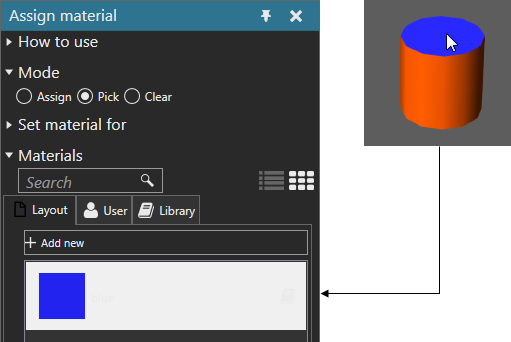

Picking Material
You can pick the material assigned to an objet in the 3D world.
- On the Modeling tab, in the Geometry group, click the Tools arrow, and then under Material, click Assign.
- In the Assign material task pane, expand Mode, and then select Pick.
- In the 3D world, click an object to pick its material, which will then be displayed in the Materials section of the Assign material task pane.
Example. Pick material of face
